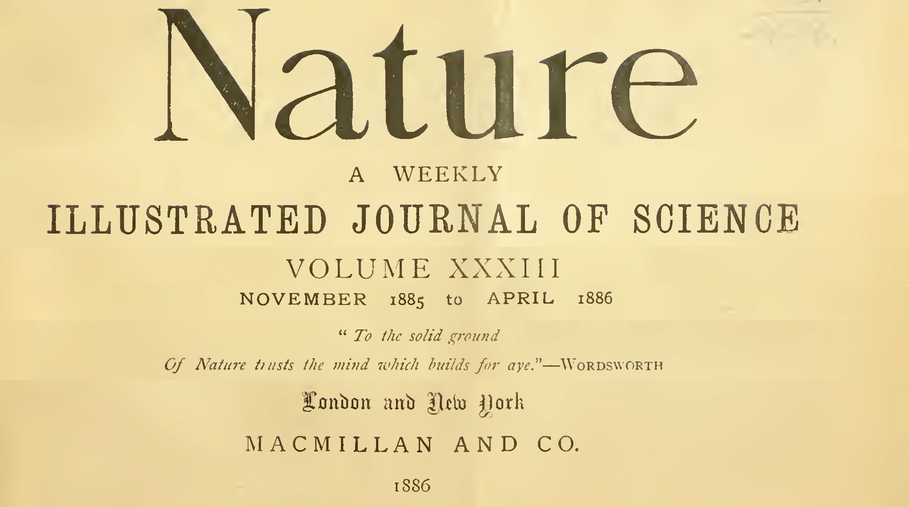
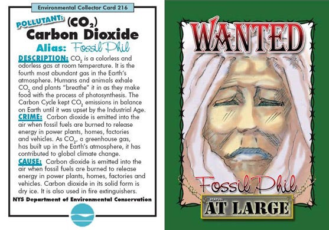
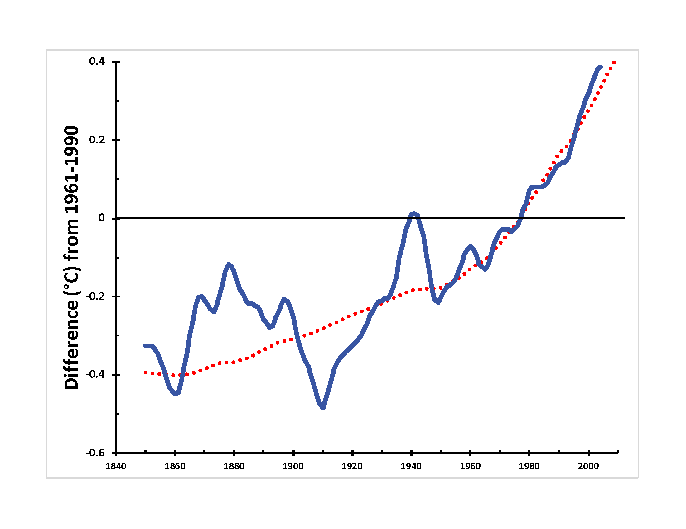
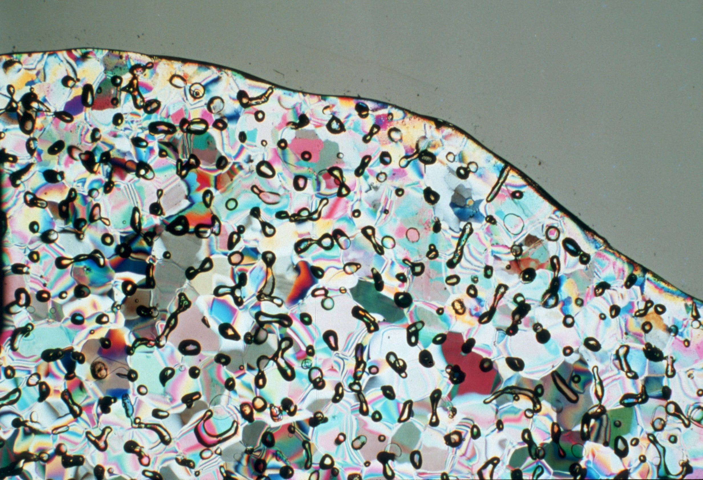
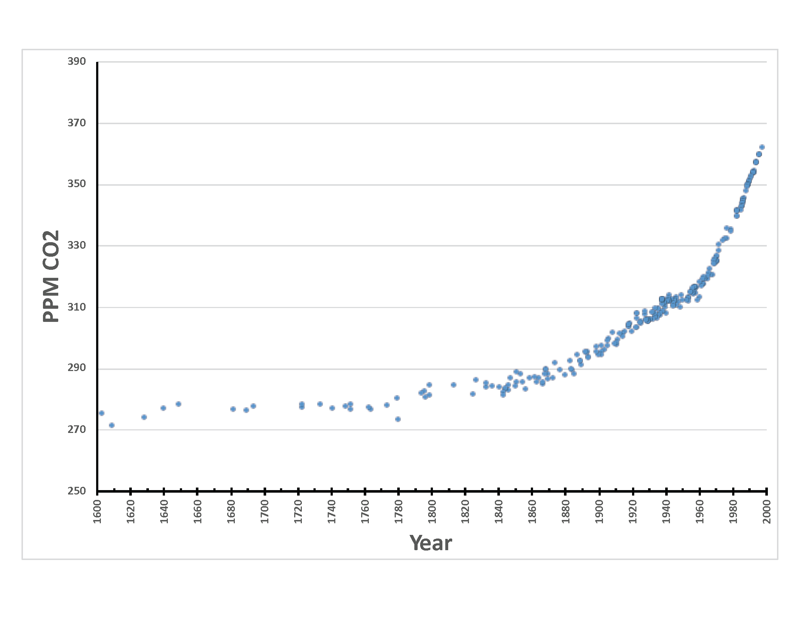

I’m Jonathan Burbaum, and this is Healing Earth with Technology: a weekly, Science-based, subscriber-supported serial. In this serial, I offer a peek behind the headlines of science, focusing (at least in the beginning) on climate change/global warming/decarbonization. I welcome comments, contributions, and discussions, particularly those that follow Deming’s caveat, “In God we trust. All others, bring data.” The subliminal objective is to open the scientific process to a broader audience so that readers can discover their own truth, not based on innuendo or ad hominem attributions but instead based on hard data and critical thought.
You can read Healing for free, and you can reach me directly by replying to this email. If someone forwarded you this email, they’re asking you to sign up. You can do that by clicking here.
Like Science itself, I refer to facts established previously, so I recommend reading past posts in order if this is your first encounter. To catch up to this point will take approximately 10 minutes of your time. [Or, of course, more, if you decide to think.]
Today’s read: 12 minutes.
Welcome back. If you haven’t read the first one yet, it’s here.
To begin, let’s contemplate how Science can be a handy way of organizing the world. A common derogative these days is “conspiracy theory”. But a theory is simply someone’s idea about how the world works, and we all have our own “pet” theories. What distinguishes a conspiracy theory from a scientific theory? Both approaches have supporting facts, which lead to logical conclusions, but they rely on different classes of facts.
Conspiracy theories are generally based on innuendo (guilt by association) and ad hominem attributions (trust or distrust of people as reliable sources). In contrast, scientific theories rely on hard evidence, generally facts that can be measured as numbers. That doesn’t mean that scientific theories can’t be wrong or conspiracy theories can’t be correct. It just means that Science, in the ideal, begins with a question and asks Nature to reveal the truth in reproducible measurements. In contrast, conspiracies start with an answer that cannot be reproduced independently and tells a story with associated facts.
Here’s a fascinating historical quote, one that urges the undecided to trust in data rather than accepting the wisdom of others, including those they might judge as experts:

Cover page of Volume 33 of Nature, a veritable institution in the scientific literature. The image is photoshopped to reduce unnecessary white space.
“A well-known lawyer, now a judge, once grouped witnesses into three classes; simple liars, damned liars, and experts. He did not mean that the expert uttered things which he knew to be untrue, but that by the emphasis which he laid on certain statements, and by what has been defined as a highly cultivated faculty of evasion, the effect was actually worse than if he had.” From an uncredited essay, found on pages 73-77 of the above, titled “The Whole Duty of a Chemist”. The piece was written on the occasion of the charter of the Royal Institute of Chemistry in London.
This excerpt dates from the earliest days of the formal discipline called “chemistry”, the field I chose to study back in my youth. Yet, it highlights a general truth about truth itself. There are ways we can be mistaken about what is true, including, of course, white lies and deliberate lies. But, we can also be deceived by experts that claim to know what the truth is. In either a courtroom or public opinion, experts can be more dangerous than liars. Since I am an expert in a few things, I’m sure there are some instances where I would beg to differ! But, when we allow others to do our thinking for us, it’s worth thinking about who we trust and why. Reiterating Deming’s caveat, “In God we trust. All others, bring data.” Onward.
The story continues…
It’s time to introduce the central character in the narrative, Carbon. As a classically trained organic chemist, I don’t know where to begin! Suffice it to say, the chemistry of carbon (generally, organic chemistry) is nothing less than the chemistry of life itself. For every living thing, carbon is the most essential element in the Periodic Table. Nearly 20% of your body is carbon, and its chemistry generates most of life’s complexity. Carbohydrates, fats, proteins, DNA, RNA, you name it, it’s all got carbon in it. It’s even in all that stuff you buy because it is “all-natural” or “chemical-free”. So this newsletter’s title is a trick question: If Carbon had a Facebook profile, its relationship status with humanity would undoubtedly be “It’s complicated.” Extraordinarily complicated.
Personally, I am a hard-core, die-hard fan of Carbon. I think that it’s the ultimate good guy in the story of life on Earth. But recently, my hero has been vilified: Everywhere you turn, someone is boasting about reducing their “carbon footprint”, and companies large and small are looking to “decarbonize” all the way to Nirvana, “net-zero”. Of course, it’s the form of carbon found in the air, carbon dioxide gas (aka CO2), where carbon allegedly shows its sinister side. It’s so widely accused of being an evil criminal, CO2 (aka Fossil Phil?!) is even wanted in New York State (like others who shall remain nameless…) for crimes of “emission” (even though carbon dioxide is used to make food and fire extinguishers?):

“Air Villain” trading card published by the New York State Department of Environmental Conservation. Frankly, it’s not very compelling: “Crime” and “Cause” start with the same damned sentence. I don’t think that emission by itself is a crime. I’m definitely not fond of the artsy mug shot (to me, it seems vaguely racist). Also, I am not picking on anyone named Phil. Some of my best friends are Phils.
Let’s give my hero due process, OK? What’s the big deal with carbon dioxide, anyway?
Carbon dioxide is a well-defined molecule, and like all molecules, it possesses specific chemical properties. The “bad” property is the one that helps the Earth hold on to energy from sunlight in the same way that a greenhouse does—hence the set phrase “greenhouse gas” for carbon dioxide and molecules like it. Its villainy allegedly lies in this character defect, and climate scientists have publicly judged it guilty of causing the planet to become (just a little bit) warmer, on average. We can (and will) get to how (and to what temperature) humans should set the thermostat in future newsletters.
But what is the data that carbon dioxide is responsible for global warming?
As you might imagine, there’s a LOT of it, and scientists with computers go pretty wild with graphs and analyses and all sorts of dramatic maps. As I pointed out in “Is Global Warming Real?” to publish their work, modern scientists are incentivized to draw compelling conclusions in papers written for an audience of their peers. Casual readers quickly get lost in impenetrable jargon. But, the question for the reader of this newsletter is a simple, yes-no question: “Based on the data, is the increased temperature of Earth we see because there is more carbon dioxide in the air?”
This question is not as simple as it seems. We can’t do an experiment directly, and cause-effect relationships are notoriously difficult to prove without one. But, we can establish a logical connection and answer a slightly different question: “Based on what we know about carbon dioxide’s tendency to retain heat, how much warmer is Earth today than it might have been otherwise?”
Before getting to the data, I have to resort to jargon. Sorry about that! To understand the connection between carbon dioxide and the temperature of the air, you have to know what scientists can measure. In this case, the key is a measurement called “radiative forcing”, abbreviated as ∆F, which measures the greenhouse effect. It has the units of watts per square meter, describing how much sunlight (in watts—think light bulbs) is retained as heat per unit area (in square meters) given a particular atmospheric composition. Conceptually at least, you could imagine measuring ∆F directly by taking a transparent box filled with air, putting it out in the sun, and measuring the temperature at different carbon dioxide concentrations—it’s more complicated than that, but you get the idea. The measurement, ∆F, is an intrinsic property of a gas sample, and it never changes.
The relationship between ∆F and warming from carbon dioxide in the atmosphere, while pretty self-evident, is also complicated. To relate the two, you have to consider everything that might change the intensity of sunlight or the composition of air, including seasons, variations with altitude, and so forth, to figure how much warmer the planet is because of the greenhouse effect. That means creating a computer model of the earth with all of these variations, and a lot of math and complicated computer programming is involved. I promised no math, so all you need to know is this: Very detailed models exist. I’m not asking you to trust them. Yet.
As a rule, I personally don’t care much for models because they invariably spit out an answer, one that depends on baseline assumptions. [Consider, for example, 42.] And it’s both necessary and too easy to tweak the assumptions until the model matches the data. It’s something that my late Ph. D. supervisor, Jeremy Knowles, would have referred to as “mental masturbation.” He wasn’t a fan of models, either.
Consider statistician George Box’s dictum: “All models are wrong, but some are useful.”1 A model would indeed be helpful in this case, even if it isn’t 100% right, because we can’t do a direct experiment. It certainly helps that the earth hasn’t changed all that much, at least since human beings arrived on the scene. We’ve measured it carefully for a few centuries, so it would be challenging for unscrupulous modelers to tweak their assumptions willy nilly just to publish a scholarly paper. Plus, it’d be apparent to other climate scientists if the assumptions were wrong—and they will point out the errors, if so.
Therein lies the main virtue of what scientists call “peer review”—it’s purposefully designed to be self-correcting. Believe me, as the co-author of several “peer-reviewed” papers, even the most simpatico peers, especially when hiding behind a veil of anonymity, are blood-thirsty critics. However, “peer review” has its vices. It can also be a self-reinforcing system, where groupthink can become a serious yet subtle problem.
Professional climate scientists have created several competing computer models of the earth that include every conceivable complexity. They have used these models to calculate that Earth’s average temperature changes by about 0.5°C per ∆F, something they pretty much all agree on. Now, that’s a number we can use! It means that if we know the atmosphere's chemical composition, we can calculate ∆F. Then, we can calculate what the expected average temperature is as carbon dioxide increases. Finally, it’s time for the data!
Returning to the question: “Based on what we know about carbon dioxide’s tendency to retain heat, how much warmer is Earth today than it might have been otherwise?” To keep things consistent, I downloaded the measured amount of carbon dioxide, converted it to predicted temperature changes, and normalized it as if scientists had measured it directly from thermometers. The “predicted vs. actual” plot is:

Solid Blue Line: Actual composite temperature measurements of Earth; Dotted Red Line: Predicted temperature from ∆F of CO2 alone. Temperatures from Figure 3.4(b) of Trenberth, K.E., P.D. Jones, P. Ambenje, R. Bojariu, D. Easterling, A. Klein Tank, D. Parker, F. Rahimzadeh, J.A. Renwick, M. Rusticucci, B. Soden and P. Zhai, 2007: Observations: Surface and Atmospheric Climate Change. In: Climate Change 2007: The Physical Science Basis. Contribution of Working Group I to the Fourth Assessment Report of the Intergovernmental Panel on Climate Change [Solomon, S., D. Qin, M. Manning, Z. Chen, M. Marquis, K.B. Averyt, M. Tignor and H.L. Miller (eds.)]. Cambridge University Press, Cambridge, United Kingdom and New York, NY, USA. Predictions calculated using T = 0.5∆F and ∆F = 5.35ln(CO2/CO2o) from CO2 concentrations (from 1750 to 2010) tabulated in Table AII-1-1a of IPCC, 2013: Annex II: Climate System Scenario Tables [Prather, M., G. Flato, P. Friedlingstein, C. Jones, J.-F. Lamarque, H. Liao and P. Rasch (eds.)]. In: Climate Change 2013: The Physical Science Basis. Contribution of Working Group I to the Fifth Assessment Report of the Intergovernmental Panel on Climate Change [Stocker, T.F., D. Qin, G.-K. Plattner, M. Tignor, S.K. Allen, J. Boschung, A. Nauels, Y. Xia, V. Bex and P.M. Midgley (eds.)]. Cambridge University Press, Cambridge, United Kingdom and New York, NY, USA, pp. 1395-1445, published 31 January 2014. Phew!
Whoa! Even I didn’t expect it to look that good! [If you’re mathematically inclined, check the work, it’s a simple formula applied to public data.] As technologies have gotten more precise, widespread, and comprehensive (>1960, think the Space Age), these models have become more predictive. And now, it definitely looks like the warming could be accelerating. [I guess I’m going to have to rethink my snarky comment about being able to measure the success of the Paris Accord.]
Sadly, I may have to concede that my hero, Carbon, is guilty as charged. But, we haven’t seen the last of our hero/anti-hero. [Carbon will always be a net-hero in my heart!]. This is, of course, only the verdict; The sentencing phase is yet to come.
But, wait a minute. Wait just a darn minute…How do we know how much carbon dioxide was in the atmosphere in “preindustrial” times? The Paris Accord tells us that’s the starting line, but it sounds kinda fake. Science didn’t even know what carbon dioxide was until 1750, so how could it be measured? This could all be just a complicated conspiracy foisted on unsuspecting fools by self-promoting scientists and their fancy computers, right??!
Well…no. Unlike temperature, carbon dioxide doesn’t change. It’s the same today as yesterday and the same as it was a million years ago. If we had samples of old air, then we could measure them today, all at one time. Where can we find old atmosphere, though?
It turns out that air is trapped in snowdrifts and becomes compacted into ice over time so that it doesn’t mix with the rest of the atmosphere—it becomes sort of a fossilized gas sample packed in ice. Scientists have carefully retrieved these air bubbles trapped beneath the surface of Antarctica, so what the atmosphere was like, even hundreds of thousands of years ago, can be measured today.

A sliver of Antarctic ice showing hundreds of tiny trapped air bubbles. (The ice is illuminated with polarized light, producing the colorful effect). By CSIRO, CC BY 3.0, https://commons.wikimedia.org/w/index.php?curid=35439280
We can get the data on carbon dioxide concentration in the past from these tiny, fossil air bubbles. Older air is buried deeper, and we can also “measure” the historical record in years, knowing about how much snow falls every year in the Antarctic and when atmospheric events that produce distinct airborne chemicals, like volcanic eruptions, have happened. So, it’s a solid set of relatively unprocessed data. What does it show us?

Original Data from Rubino, M., et al. (2013), J. Geophys. Res. Atmos., 118, 8482–8499, doi:10.1002/jgrd.50668.
OK. Clearly, that’s a flat line that starts to rise significantly after about 1750,2 and more recent data jives with measurements made in the air. To measure little air bubbles trapped in ice accurately, these chemical archaeologists must know what they’re doing. Besides, I’m not going to spend years drilling into Antarctic ice to check their work—if they’re willing to go to that length to measure something, they’re my kind of scientists.
For me, this nails the case shut. My hero Carbon is guilty as charged beyond the shadow of the doubt despite all of its virtues—it’s the primary culprit in global warming. As always, you’re free to disagree with the conclusion. But bring data if you do.
At some point, stretching the metaphor, the indicted (and now convicted criminal) Carbon will need to be sentenced. I’ll be a good character witness for sure! To lead into later newsletters, the main questions to contemplate are, “Where was the carbon before it was released into the air?” and “Given extenuating circumstances and Carbon’s history of good deeds, what’s the appropriate sentence?”
A side note: George Box was a renowned statistician. I became aware of the opening Nature essay while doing background on the oft-repeated phrase widely attributed to Mark Twain, “Lies, damned lies, and statistics”. Twain stole the riff from an English jurist. And I never used the phrase.
In fact, it’s at the 1750 level for the entire rest of the sample, dating to the year 154 AD (yes, the 2nd century). Other, deeper samples show that carbon dioxide levels in the air have never as high as they are right now since humans first appeared on Earth (either if you believe archaeologists or if you believe the Book of Genesis).